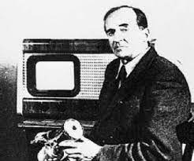
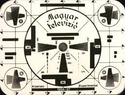
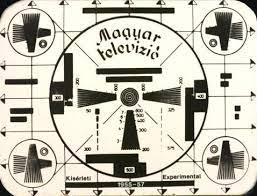
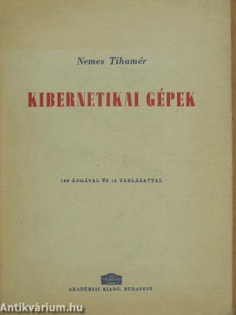

Nemes Tihamér
Neve szinte valamennyi számítástechnikát tanuló diák előtt ismert: az ő nevét viseli a hagyományosan évente megrendezésre kerülő egyik országos középiskolai számítástechnikai tanulmányi verseny két kategóriában. Ezen kívül vajon tudjuk, hogy a kora géniusza és polihisztora volt.
Élete
Nemes Tihamér Budapesten született 1895. április 29-én. Magát gépészmérnöknek vallotta. Műszaki tudományok doktorává avatták 1957-ben. Sokan feltalálónak, mások a kibernetika egyik hazai úttörőjének, rendszerezőjének tartják. A neuron hálózatok, műállatok, játszógépek, a műsúrlódás, a műfigyelem, az alkotógépek, a műöntudat kutatója volt, ami jelzi, hogy emberivé kívánta tenni a mechanikus szerkezeteket, hogy azokat az emberek emberi módon használhassák.
Szülei Nemes Mihály és Auguszt Mária voltak. Oklevelét 1917-ben Budapesten szerezte a Műegyetemen. Rövid ideig dolgozott a Lloyd repülőgépgyárnál. 1921-től a Telefonhírmondóhoz került, majd annak főmérnökének nevezték ki. 30 éves korában az Elektromos és Finommechanikai Rt. igazgatójává léphetett elő. 1929-től a Posta Kísérleti Állomásán dolgozott. Az 1930-as évek közepétől megkezdte a televíziózás elméleti és gyakorlati tanulmányozását. Részt vett az első hazai kísérletekben. 1938-ban szabadalmi bejelentést tett színes televízió megvalósítására. 1950-ben a Távközlési Kutató Intézet tudományos munkatársa.
Munkássága
Rövid ideig dolgozott a Lloyd repülőgépgyárnál. 1921-től a Telefonhírmondóhoz került, majd annak főmérnökévé nevezték ki. 30 éves korában az Elektromos és Finommechanikai Rt. igazgatójává lépett elő. 1929-től a Posta Kísérleti Állomáson dolgozott.
Az 1930-as évek közepétől megkezdte a televíziózás elméleti és gyakorlati tanulmányozását. Részt vett az első hazai kísérletekben. 1938-ban szabadalmi bejelentést tett színes televízió megvalósítására.
1950-ben a Távközlési Kutató Intézet tudományos munkatársa lett. Érdeklődési körébe tartozott az elektrotechnika, logika, szimuláció, modellezés, de leginkább a logikai gép. Nemes Tihamér sakkozó- és sakkfeladványokat megoldó gépei is elsősorban az emberi gondolkozás modellezésére szolgáltak. Számtalan televíziós szabadalma szimulálta az emberi szem funkcióit.
Postamérnökként egyike a magyar televíziózás megteremtőinek. 1953-ban készítetette az első magyar kísérleti tv-adó berendezést.




Műve
Nemes Tihamér mélyen érdeklődött a számítástechnika iránt: „Kibernetikai gépek” című könyvében külön fejezetet szentel a számítógépeknek. Munkái alapján joggal nevezhetjük őt nemcsak a kibernetika, hanem a magyar számítástechnika egyik jeles úttörőjének is.
A „Kibernetikai gépek” című könyve 1962-ben, két évvel halála után jelent meg. A könyv anyagát Nemes Tihamér barátai szedték össze, a mérnök jegyzeteiből. Így szerettek volna adózni a „meg nem értett” magyar feltaláló emlékének. A könyv a maga korában meghatározó mű lett, 17 nyelvre fordították le.
Emlékezete
Sokan éppen ezt a könyvet tekintik Nemes Tihamér tudományos hagyatékának. Ebben valóban szinte minden megtalálható, ami mûszaki pályafutása alatt érdeklődési körébe tartozott. Hozzá kell azonban tenni, hogy ennél sokkal többet adott át fiatal munkatársainak, akiket felkészített a műszaki élet további fejlődésére, és akik közül többen is jelentôs szerepet vállaltak a híradástechnika, távközléstechnika, a számítógépes technika és informatika továbbfejlesztésében.
A műszaki tudományok doktorává avatták 1957-ben. Nevét viseli az Országos Informatikai Tanulmányi Verseny.